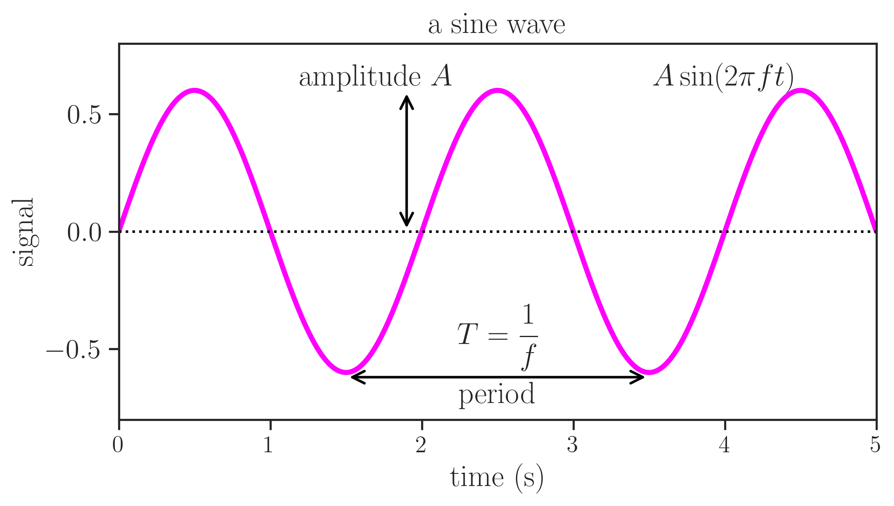
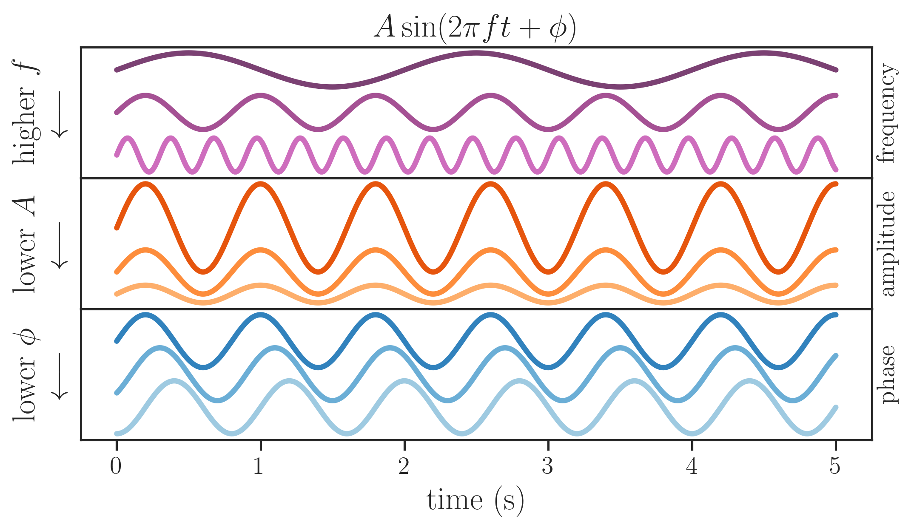

16 Fourier transform
16.1 Basic wave concepts
The function
\[ f(t) = B\sin(2\pi f t) \tag{16.1}\]
has two basic characteristics, its amplitude \(B\) and frequency \(f\).

In the figure above, the amplitude \(B=0.6\) and we see that the distance between two peaks is called period, \(T=2\) s. The frequency is defined as the inverse of the period:
\[ f = \frac{1}{T}. \tag{16.2}\]
When time is in seconds, then the frequency is measured in Hertz (Hz). For the graph above, therefore, we see a wave whose frequency is \(f = 1/(2 \text{ s}) = 0.5\) Hz.
In the figure below, we see what happens when we vary the values of the frequency and amplitude.

The graph above introduces two new characteristics of a wave, its phase \(\phi\), and its offset \(B\). A more general description of a sine wave is
\[ f(t) = B\sin(2\pi f t + \phi) + B_0. \tag{16.3}\]
The offset \(B_0\) moves the wave up and down, while changing the value of \(\phi\) makes the sine wave move left and right. When the phase \(\phi=2\pi\), the sine wave will have shifted a full period, and the resulting wave is identical to the original:
\[ B\sin(2\pi f t) = B\sin(2\pi f t + 2\pi). \tag{16.4}\]
All the above can also be said about a cosine, whose general for can be given as
\[ A\cos(2\pi f t + \phi) + A_0 \tag{16.5}\]
One final point before we jump into the deep waters is that the sine and cosine functions are related through a simple phase shift:
\[ \cos\left(2\pi f t + \frac{\pi}{2}\right) = \sin\left(2\pi f t\right) \]
16.2 Fourier’s theorem
Fourier’s theorem states that
Any periodic signal is composed of a superposition of pure sine waves, with suitably chosen amplitudes and phases, whose frequencies are harmonics of the fundamental frequency of the signal.
See the following animations to visualize the theorem in action.

Source: https://en.wikipedia.org/wiki/File:Fourier_series_and_transform.gif
{kind=link}

Source: https://commons.wikimedia.org/wiki/File:Fourier_synthesis_square_wave_animated.gif

Source: https://commons.wikimedia.org/wiki/File:Sawtooth_Fourier_Animation.gif

Source: https://commons.wikimedia.org/wiki/File:Continuous_Fourier_transform_of_rect_and_sinc_functions.gif
16.3 Fourier series
a periodic function can be described as a sum of sines and cosines.
Not any function, but certainly most functions we will deal with in this course. The function has to fullful the Dirichlet conditions
The classic examples are usually the square function and the sawtooth function:
[Source: https://www.geogebra.org/m/tkajbzmg]
https://www.geogebra.org/m/k4eq4fkr
\[ F[x(t)] = F(f) = \int_{-\infty}^{\infty}x(t)e^{-2\pi i f t}dt \]
\[ f(t) = \int_{-\infty}^{\infty}F(f)e^{2\pi i f t}df \]
https://dibsmethodsmeetings.github.io/fourier-transforms/